The Photo Manipulator
Sunday • April 24th 2022 • 3:50:17 pm
Digital Photo Forensics: How To analyze Fake Photos
Photo Forensics Tutorial
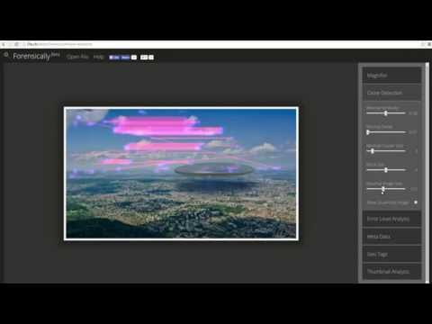
Forensically, free online photo forensics tools - 29a.ch »
Imago Forensics - Image Forensics Tutorial
Why people think this photo of JFK's killer is fake
DIP Lecture 24a: Digital Image Forensics
Intro to Digital Image Processing: Full Playlist
Intro to Digital Image Processing: Full Playlist »
James Randi and the Cottingley Fairies ❤️
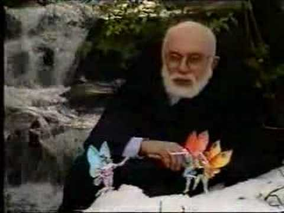
10 Manipulated Historic Photos
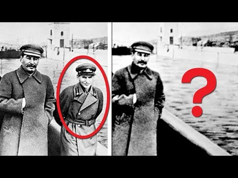
HE WASN'T HURT, IT WAS STAGED: The first faked photograph
Was this famous war photo staged? feat. Errol Morris
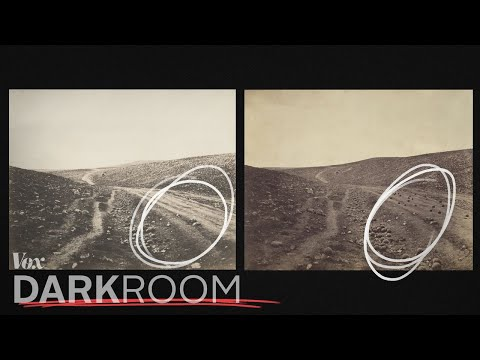
VIEWER DISCRETION US CIVIL WAR DEATHS: The (mostly) true story of ghost photography
Is This Photography's Greatest Fake?
Why All Images of Space Are Photoshopped
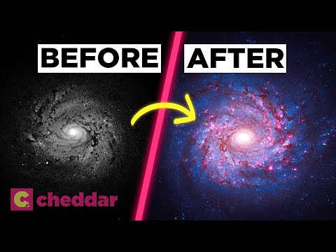
How scientists colorize photos of space
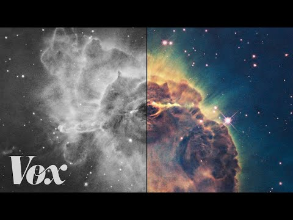
How to FAKE a Sunset Photo
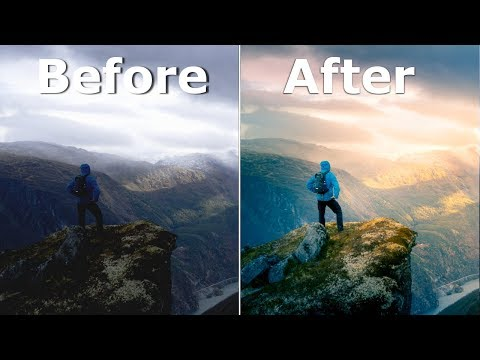
Editing YOUR Photos!!
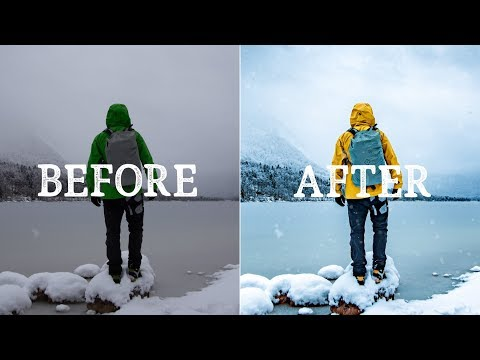
How to FAKE stuff in your photos!
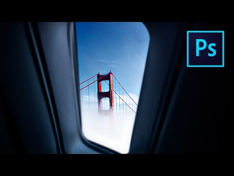
Video tutorial for using filter 'G'MIC / Layers / Blend [seamless]'
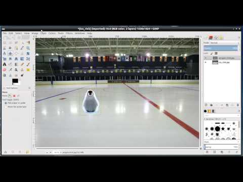
Face Swap with G'MIC - GIMP 2.8 Tutorial
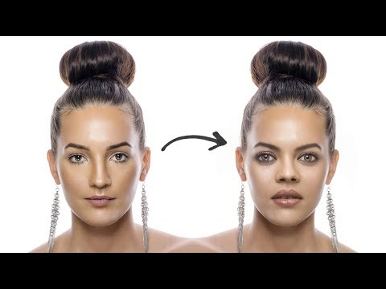
How to Use GIMP (Beginners Guide)s
HOW TO USE GIMP - Complete Tutorial for Beginners 2020
A Beginner's Guide To Gimp
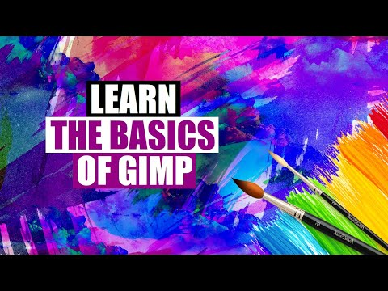
9 Best GIMP Plugins + Addons for 2022
Download and Install GIMP Resynthesizer Plugin
G'MIC -- Free Image Manipulation Powerhouse
How to Install G'MIC Plugin - GIMP 2.10 Tutorial
Create A Dual Lighting Effect with GIMP
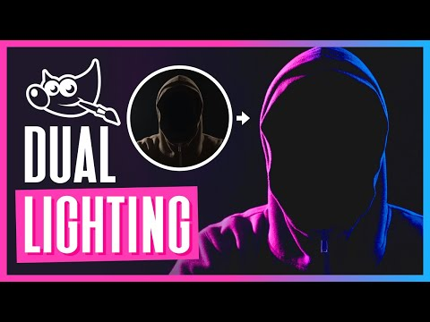
GIMP Tutorial : Glowing Neon Lines Effect
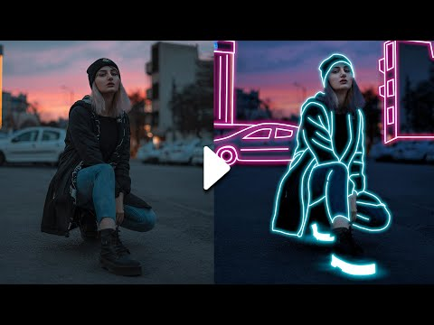
GIMP Photo Effects Tutorial {Glowing Effect}
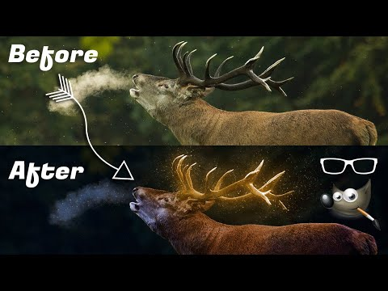
Gimp: How to change a photo into a pencil drawing.
Photo to Comics conversion with the G'MIC 'Engrave' filter
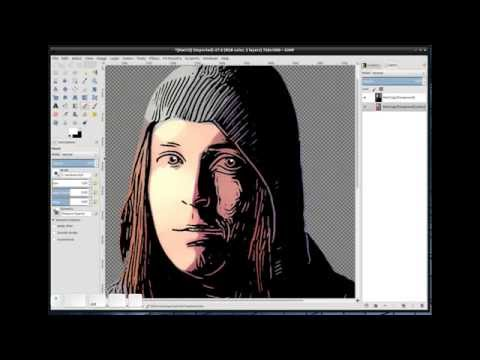
How to turn a photograph into a digital pencil sketch with Gimp
GIMP Tutorial - Colouring a Black and White Image
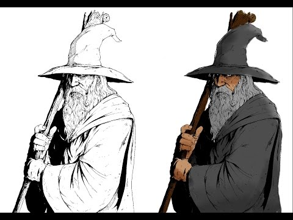
GIMP Tutorial: Top 5 Photo Enhancement Techniques
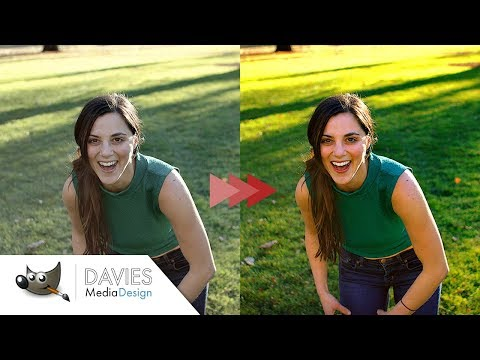
Layer Masking - GIMP 2 8 - Tutorial
How To Easily Remove a Background in GIMP {And, Retain Hair Detail} /// Step-by-Step Instructions
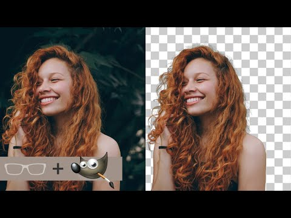
7 Ways To Remove a Background in GIMP
How To Create a Double Exposure Effect in GIMP
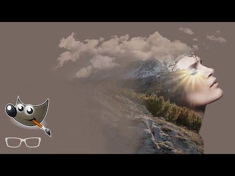
How To Change the Color of Clothing With GIMP
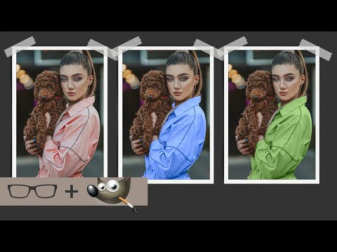
Create Caricatures with GIMP | Tutorial
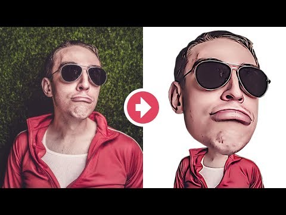
GIMP | Make Eyes Pop
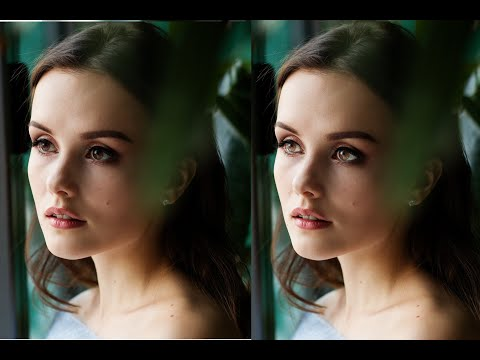
Remove Dark Circles Under Eyes Easily in GIMP
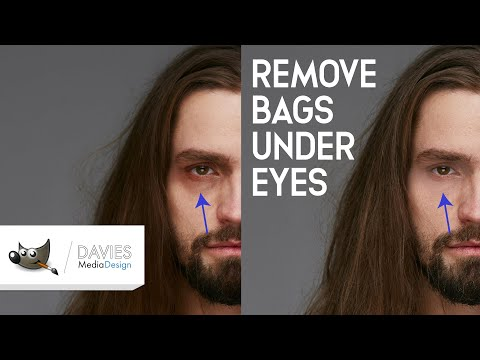
How to Edit Portraits in GIMP for Beginners - GIMP Tutorial
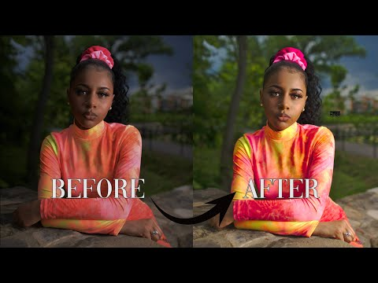
Face Replace (Match Skin Color) - GIMP 2.8 Tutorial
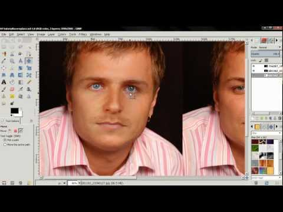
Make Your Photos Look Better - GIMP 2.8 Tutorial
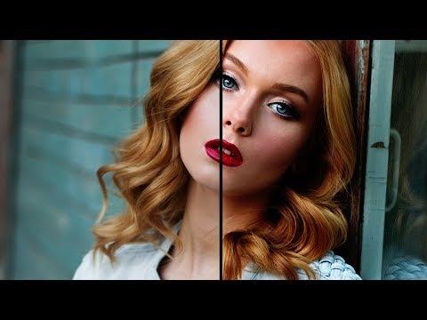
GIMP Tutorial: Put Someone's Face on an Object
Basic Exposure Blending using GIMP
Create HDR Photo - GIMP 2.8 Tutorial
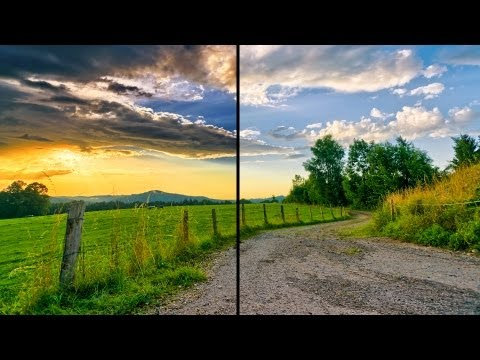
Easy Exposure Blending Trick in GIMP (Tutorial)
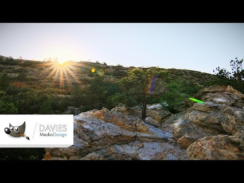
Gimp Tutorial: Easy Business Card Design Tutorial in Gimp
GIMP Tutorial: Business Card Design
How Botticelli revolutionised portraits | Art history in 10 minutes
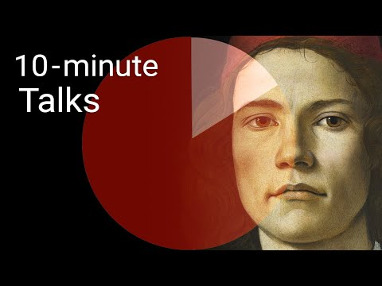
Why does this lady have a fly on her head?
EASY Photo Transfer to Wood | LASER PRINT on Wood Using Mailing Labels, Fast, Reusable, Cheap DIY ❤️
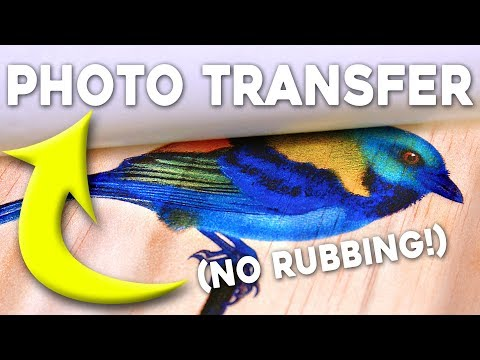